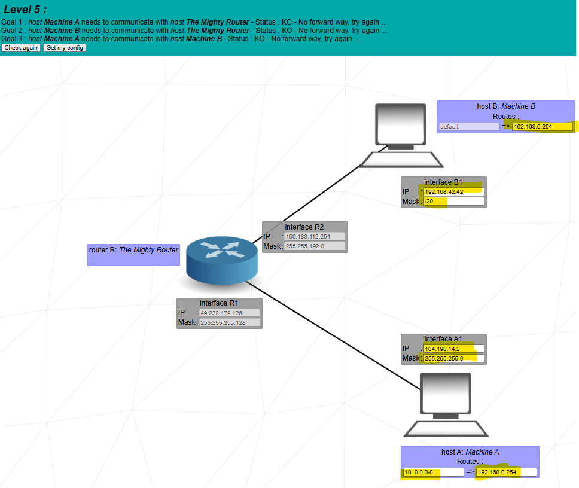
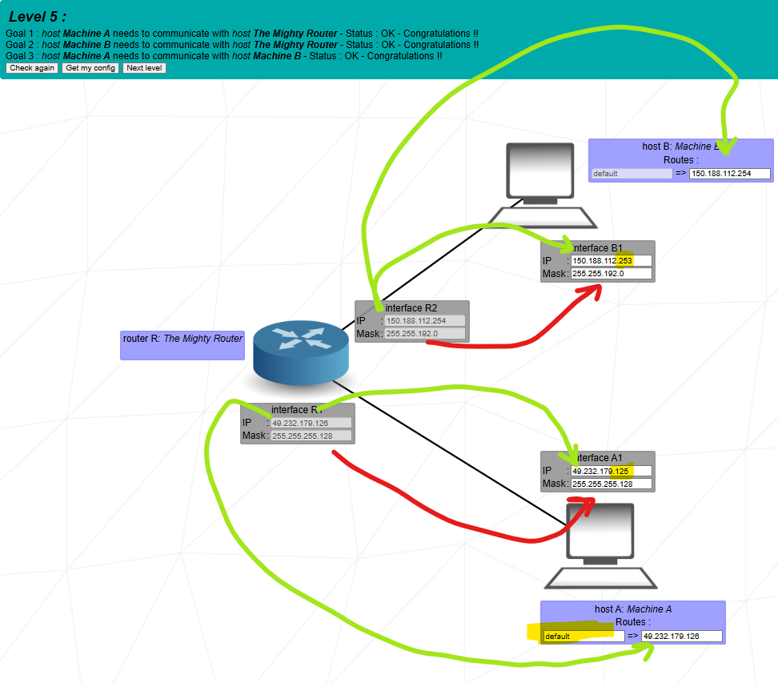

Goal: Machine A and Machine B are in **two different LANs** connected by a router. You must put each host in the same subnet as its router interface, then configure default routes so A, B, and the router can all reach each other.


Unlike Levels 1–4, here the two machines are **not** on the same LAN. Each one is on its own network, connected to a router with two interfaces (R1 and R2). To make communication work:
You copy the mask from R1 to A1 and choose an IP in the same subnet.
49.232.179.126, mask 255.255.255.128 (/25).49.232.179.125, mask 255.255.255.128.Both addresses lie in 49.232.179.0/25, so A and R1 share one LAN.
You copy the mask from R2 to B1 and choose a valid IP in that network.
150.188.112.254, mask 255.255.192.0 (/18).150.188.112.253, mask 255.255.192.0.Both are usable hosts in 150.188.64.0/18, so B and R2 are in one LAN.
Each host has a tiny routing table. When sending a packet, it:
In words: “Anything outside my subnet, send it to my router (gateway).”
When A sends to B’s IP, it sees this is not in 49.232.179.0/25, so it uses its default route and sends the packet to R1. R1 knows the other LAN and forwards the packet out via R2 to B. B does the symmetric path in reverse.
B sees that 49.232.179.126 is not in its own 150.188.64.0/18 network, so it looks into its routing table, matches the default route, and sends to its gateway R2. The router then delivers the packet to R1, and the simulator prints “destination IP reached”.
A sends everything outside 49.232.179.0/25 to R1 (its default). R1 recognizes that 150.188.112.253 belongs to the network behind R2 and forwards it to R2, then to B.
“In Level 5 there are two separate LANs, one for Machine A and one for Machine B, each connected to a different interface of the same router. I first make each host share a subnet with the router interface on its side. For A, I use the /25 mask 255.255.255.128 with R1 at 49.232.179.126 and A1 at 49.232.179.125 in the network 49.232.179.0/25. For B, I use the /18 mask 255.255.192.0, putting B1 at 150.188.112.253 and R2 at 150.188.112.254 in the network 150.188.64.0/18.
Then I configure the routing tables on the hosts. On A I set the default route to 49.232.179.126, on B I set the default route to 150.188.112.254. That means any destination outside the local subnet is sent to the router as gateway. When A wants to reach B, it sends traffic to its default gateway R1, which forwards it to R2 and then to B. When B answers, it sends to its own default gateway R2, which forwards back to R1 and then to A. This configuration allows A to reach the router, B to reach the router, and A and B to reach each other through the router.”